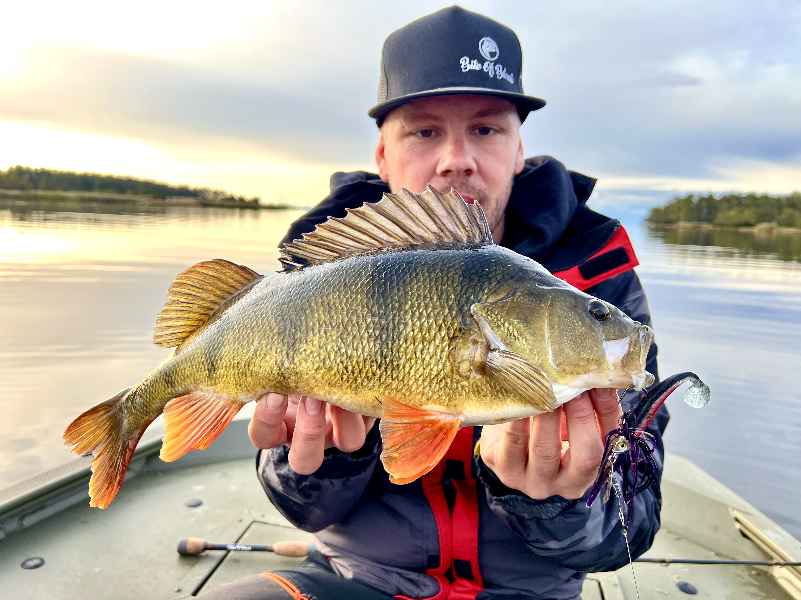

Tekniker för abborrfiske
Abborrfisket i Sverige har utvecklats enormt de senaste åren. Från traditionellt mete till avancerade tekniker som Ned-rig, Dropshot och Carolina-rig. Här går vi igenom de viktigaste betestyperna för att lyckas i alla lägen.

Jiggar
Mjuka gummibeten är basen i abborrfisket. Genom att variera tyngden på jiggskallen kan du fiska på allt från en meter till tio meters djup.
Långsamt fiske
Crankbaits
Crankbaits är perfekta för att täcka mycket vatten snabbt. De vibrerar kraftigt och lockar abborren till aggressiva hugg.
Aktivt sök
Jerkbaits / Twitchbaits
Små jerkbaits som "twitchas" hem imiterar en skadad betesfisk perfekt. Extremt effektivt under sommaren och tidig höst.
Reaktionshugg
Färgval & Strategi
I klart vatten fungerar naturliga färger bäst, medan grumligt vatten kräver "skrikiga" färger som guld, orange och chartreuse.
ViktigtVanliga misstag
- För högt tempo vid kallt vatten
- För tjock tafs som skrämmer fisken
- Att inte variera fiskedjupet
Utrustning för Abborre
- Lätt haspelspö (5-20g)
- Flätlina 0.10-0.12mm
- Flourcarbon-tafs
- Blandade jiggar (7-10cm)